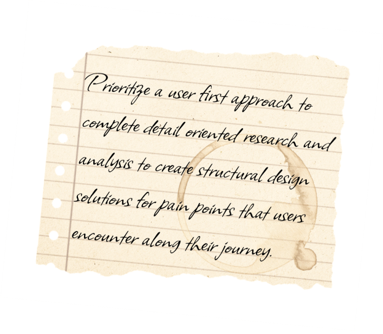
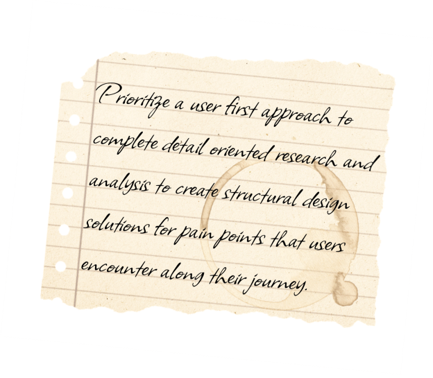

Allow me to introduce myself.
My name is
Leighana Rautsaw
I’m a detail-oriented certified UX/UI designer with efficient problem-solving skills, a strong focus on user research, and a passion for elegant design.
I pride myself in creating intuitive interfaces that are not only functional and look good but also prioritize user needs by analyzing the problem to come up with the best solution for the optimal user experience.
Having a background in mathematics and fine arts, I enjoy combining my analytical side with my creative side to become a storyteller as a UX/UI Designer.


 
